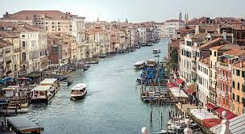

St. Mark's Basilica
One of Venice’s most iconic landmarks, St. Mark’s Basilica is a stunning example of Byzantine architecture. Located in the heart of Piazza San Marco, it is famous for its elaborate mosaics and the grandeur of its interior.

Venice, known as the "City of Canals," is one of the most unique and picturesque cities in the world. Located in northeastern Italy, it is built on more than 100 small islands connected by canals and bridges. Venice has a rich history dating back to the Middle Ages, and it is renowned for its art, architecture, and culture. Visitors are captivated by its romantic waterways, historic landmarks, and vibrant cultural scene. Whether it's a gondola ride on the Grand Canal or exploring the narrow streets, Venice offers an unforgettable experience for travelers.
One of Venice’s most iconic landmarks, St. Mark’s Basilica is a stunning example of Byzantine architecture. Located in the heart of Piazza San Marco, it is famous for its elaborate mosaics and the grandeur of its interior.
The Grand Canal is the main waterway of Venice, winding through the city like a grand boulevard. It is lined with beautiful buildings that date back centuries, offering a breathtaking view of Venice's unique architecture.
The Rialto Bridge is one of Venice’s most famous bridges, spanning the Grand Canal. Built in the late 16th century, it is a masterpiece of Renaissance architecture and offers stunning views of the city.